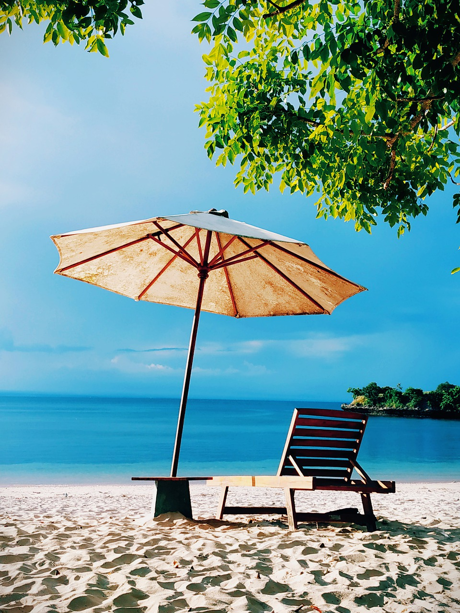
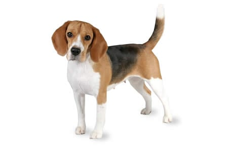

Jacob Pearson
This is a webpage about me. My likes, dislikes, hopes, dreams, and favorite things.
Biography
I am a Student, Graphic Designer, Construction Worker, Landscaper, and general outdoorsman. I love to fish and I love to cook what I catch. I am currently writing a book called "The Red Spire" about a covert military that is supported by NATO and exists outside of the laws of war. I am going to be a US Marine.
My Favorite Quote
"When something is important enough, you do it even if the odds are not in your favor." ~ Elon Musk
My Favorite Food
- Pizza
- Steak
- Chicken
- Pulled Pork
- Burgers
- Beef Potroast
My Top Five Favorite Movies in order
- Harold and Kumar go to Guantanamo Bay
- Jarhead the Law of Return
- The Outpost
- Stripes
- Saving Private Ryan
Countries I'd Like to Visit and What I'd Like To Do There
- Germany
- Eat German food
- Speak the language
- See the sights
- Japan
- Eat real sushi
- See the sights
- Appreciate the history firsthand
- Visit the major towns
- Switzerland
- Meet my Swiss friend
- Climb in the alps
- Take in the sights
- Use my Swiss-German
- Slovakia
- Meet my Slovakian friend
- See the sights
- Go Hiking
Other Favorite Things
| Favorite Game | VRChat |  |
|---|---|---|
| Favorite Show | Brooklyn 99 |  |
| Favorite Season | Summer |  |
| Favorite Animal | Dog |  |
| Favorite Tree | Ash Tree |  |
| Favorite Console | Any VR Headset but I have the Meta Quest 1 |
 |
Contact Information
Email: jpearson4926@cabarrus.k12.nc.us
Phone: 123-456-7890